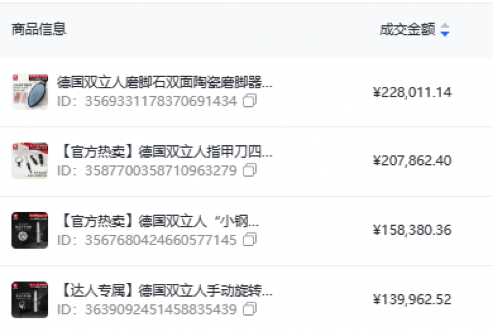
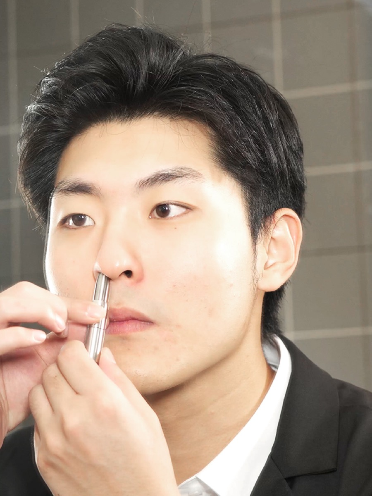

双立人个护抖音旗舰店
Douyin Store Operation
2023
107.8 万
上半年 GMV
65%
阶段目标完成度
1.2w
账号粉丝增长
TOP 5
抖音个人护理店铺荣誉
96.51%
30 天好评率
96+
店铺分稳定区间
| 模块 | 具体工作 | 文件证据 |
|---|---|---|
| 店铺复盘 | 上半年业绩、DSR、基础数据、费用投入 ROI、下半年行动计划 | 《抖音上半年总结PPT-韩雨潼》《2023抖音年中沟通会》 |
| 产品策略 | 核心引流款、利润款、性价比套装、赠品组合、客服底价与活动价整理 | 价格赠品体系、产品体系、库存表、产品 FAQ |
| 短视频需求 | 人群、痛点、卖点、拍摄要求、脚本方向、直播预热视频内容 | 《鼻毛修剪器短视频需求》《短视频预热内容需求》 |
| 达人合作 | 达人建联、投放预算、佣金政策、视频规范、产品卖点和常见异议回复 | 《双立人抖音内容投放》《达人工具包》《达人爆款案例》 |
| 直播运营 | 直播流程、人员分工、产品上架提醒、库存反馈、公屏互动、福袋和预告投放 | 《双立人美妆话术大全》《直播主题策划大纲》 |
| 目标人群 | 24-60 岁男性、精致女性；资深中产、新锐白领、空乘/礼仪等有上镜需求人群。 |
|---|---|
| 核心痛点 | 鼻毛外露尴尬、找不到趁手工具、电动振动发烫、差旅携带不便、工具不够精致。 |
| 主推卖点 | 手动旋转更安全、内外圈精密刀口、无痛无声、无需电池、可水洗、笔形便携、德国工艺感。 |
| 内容场景 | 面试、商务会议、相亲、差旅、节日送礼、直播间活动预热、沉浸式开箱。 |
| 预算 | 5000+ 派样 + 20% 佣金，后期按视频质量和转化调整投流。 |
|---|---|
| 节奏 | 两周内测试，每周约 10 位达人。 |
| 账号类型 | 纯佣置换和低合作费家居类博主，先测试账号类型与视频风格，稳定后扩大预算。 |
| 视频规范 | 3 分钟以内，画面清晰无水印，需挂购物车，露出产品 Logo，保留有字幕/无字幕原视频。 |



